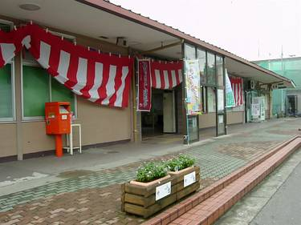
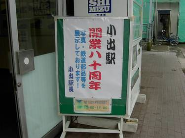
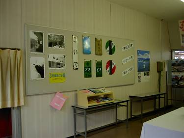
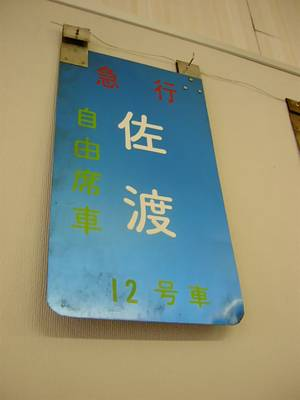
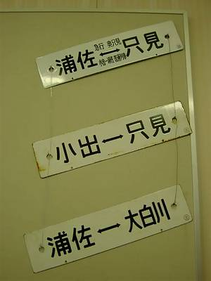
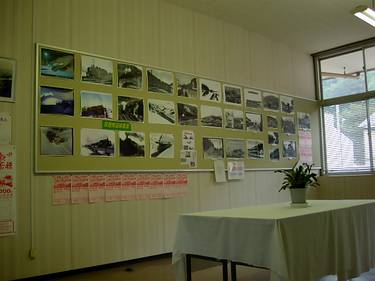
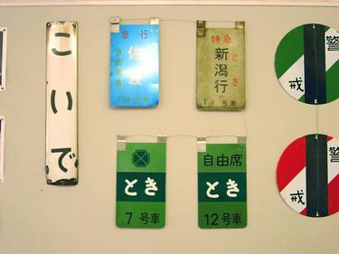

| <小出駅開業80周年記念 展示会> | |
 ↑展示会開催期間中は紅白の幕が飾られた |
大正12年9月1日の上越北線・浦佐～越後堀之内間開業と同時に誕生した小出駅が平成15年9月で満80年を迎えたのを記念して、小出駅の一角で2ヶ月間に渡って小さな展示会が開催された。以下その内容です。 ・上越線や只見線の古い記録写真のほか、昭和38年の「サンパチ豪雪」の時に小出駅にのべ5日間にわたって滞留した701列車の詳細な記録を展示。 ・列車が滞留になった当初、苛立つ乗客と駅員とがいがみ合う事もあったようだが、天候が一向に回復しないまま2日目3日目を迎える頃には乗客・駅員同士に連帯感が生じ始め、各車両ごとの乗客代表と駅員が次第に協力し合うようになっていった様子などの克明な記録。 ・この列車に乗り合わせた乗客から小出駅駅員へ宛てた「お礼の手紙」が多数寄せられた事や、その手紙の一部を展示。 このような「駅主催」の小さな展示会が開催される事は、昔の上越線を知らない者にとって、歴史を知る貴重な機会だと感じました。 |
 ↑展示会場入口 |
|
 ↑上越・只見線に関する鉄道部品を展示していたスペース |
 ↑12号車まであった急行「佐渡」号  上越新幹線開通当初は、只見線から新幹線接続駅の浦佐駅まで直行する列車があった。その頃の列車の「サボ」 |
 ↑こちらは古い記録写真の展示スペース |
|
 |
|
>> このページを閉じる << 真夏の風 |
|